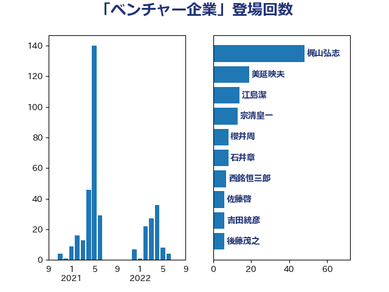

単語「ベンチャー企業」

| 梶山弘志 | 自由民主党 | 48 回 |
| 美延映夫 | 日本維新の会 | 19 回 |
| 江島潔 | 自由民主党 | 14 回 |
| 宗清皇一 | 自由民主党 | 13 回 |
| 櫻井周 | 立憲民主党 | 8 回 |
| 石井章 | 日本維新の会 | 8 回 |
| 西銘恒三郎 | 自由民主党 | 7 回 |
| 佐藤啓 | 自由民主党 | 6 回 |
| 吉田統彦 | 立憲民主党 | 6 回 |
| 後藤茂之 | 自由民主党 | 6 回 |
| 打越さく良 | 立憲民主党 | 6 回 |
| 小林鷹之 | 自由民主党 | 5 回 |
| 川田龍平 | 立憲民主党 | 5 回 |
| 西村康稔 | 自由民主党 | 5 回 |
| 佐藤英道 | 公明党 | 4 回 |
| 島村大 | 自由民主党 | 4 回 |
| 赤木正幸 | 日本維新の会 | 4 回 |
| 井上信治 | 自由民主党 | 3 回 |
| 伊佐進一 | 公明党 | 3 回 |
| 古川元久 | 国民民主党 | 3 回 |
| 田村憲久 | 自由民主党 | 3 回 |
| 菅義偉 | 自由民主党 | 3 回 |
| 萩生田光一 | 自由民主党 | 3 回 |
| 藤巻健太 | 日本維新の会 | 3 回 |
| 角田秀穂 | 公明党 | 3 回 |
| 鈴木俊一 | 自由民主党 | 3 回 |
| 上野通子 | 自由民主党 | 2 回 |
| 中川郁子 | 自由民主党 | 2 回 |
| 伊藤孝恵 | 国民民主党 | 2 回 |
| 加田裕之 | 自由民主党 | 2 回 |
| 石川昭政 | 自由民主党 | 2 回 |
| 礒崎哲史 | 国民民主党 | 2 回 |
| 羽生田俊 | 自由民主党 | 2 回 |
| 荒井優 | 立憲民主党 | 2 回 |
| 赤羽一嘉 | 公明党 | 2 回 |
| 野上浩太郎 | 自由民主党 | 2 回 |
| ながえ孝子 | 無所属 | 1 回 |
| 一谷勇一郎 | 日本維新の会 | 1 回 |
| 中野英幸 | 自由民主党 | 1 回 |
| 住吉寛紀 | 日本維新の会 | 1 回 |
| 勝部賢志 | 立憲民主党 | 1 回 |
| 吉田久美子 | 公明党 | 1 回 |
| 塩崎彰久 | 自由民主党 | 1 回 |
| 大島敦 | 立憲民主党 | 1 回 |
| 安達澄 | 無所属 | 1 回 |
| 山本博司 | 公明党 | 1 回 |
| 山田賢司 | 自由民主党 | 1 回 |
| 岡本三成 | 公明党 | 1 回 |
| 岸田文雄 | 自由民主党 | 1 回 |
| 工藤彰三 | 自由民主党 | 1 回 |
| 市村浩一郎 | 日本維新の会 | 1 回 |
| 平山佐知子 | 無所属 | 1 回 |
| 平沼正二郎 | 自由民主党 | 1 回 |
| 本田太郎 | 自由民主党 | 1 回 |
| 松山政司 | 自由民主党 | 1 回 |
| 浜地雅一 | 公明党 | 1 回 |
| 浮島智子 | 公明党 | 1 回 |
| 牧島かれん | 自由民主党 | 1 回 |
| 田嶋要 | 立憲民主党 | 1 回 |
| 田村貴昭 | 日本共産党 | 1 回 |
| 石井苗子 | 日本維新の会 | 1 回 |
| 茂木敏充 | 自由民主党 | 1 回 |
| 赤澤亮正 | 自由民主党 | 1 回 |
| 野間健 | 立憲民主党 | 1 回 |
| 金村龍那 | 日本維新の会 | 1 回 |
| 鈴木義弘 | 国民民主党 | 1 回 |
| 高木かおり | 日本維新の会 | 1 回 |
| 高野光二郎 | 自由民主党 | 1 回 |
| 麻生太郎 | 自由民主党 | 1 回 |